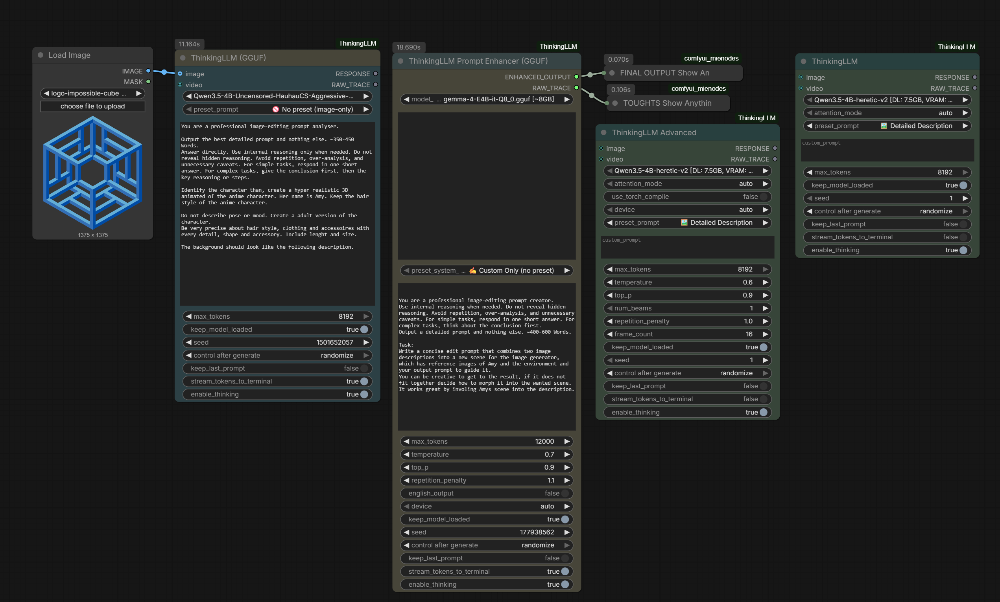

01 Problem
Local models are powerful, but their behavior can be difficult to see.
Inside a long visual workflow, a language model can appear frozen, expose reasoning where it should not, lose the raw generation trace, or imply support for inputs its selected model cannot actually handle. Debugging becomes guesswork when the interface hides those distinctions.
02 System
Model guidance and runtime visibility built into the nodes.
ThinkingLLM wraps Qwen, Gemma, and Whisper workflows behind a cleaner family of ComfyUI nodes. The interface separates normal and advanced use, provides curated model guidance, and preserves both a cleaned response and the raw generation stream.
- 01Thinking is an explicit controlEvery language-model node exposes an enable/disable choice instead of making reasoning behavior an undocumented side effect.
- 02Clean output and raw trace stay separateDownstream nodes receive the useful answer while developers can still inspect the original stream for debugging.
- 03Capability labels stay honestDedicated audio nodes and model guidance warn when a selected model is not known to support the connected input.
03 Role
Turning an inherited tool into a more usable maintained product.
I developed the control and guidance layer, expanded model coverage, added streaming and trace behavior, improved platform setup, and documented practical workflows. The repository preserves and names its GPL-3.0 fork lineage from Deaquay, huchukato, and 1038lab rather than presenting inherited work as original.
04 Evidence
Real nodes used inside real multimodal workflows.
The public package supports Transformers and GGUF paths, Qwen and Gemma model families, vision inputs, dedicated Gemma audio handling, Whisper transcription, prompt enhancement, live terminal streaming, and raw trace outputs.
